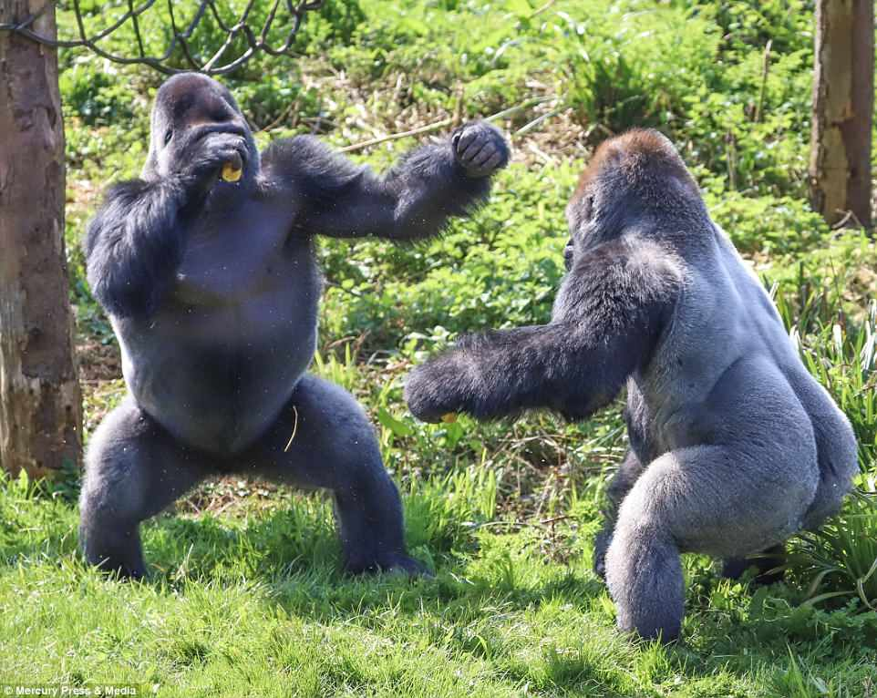
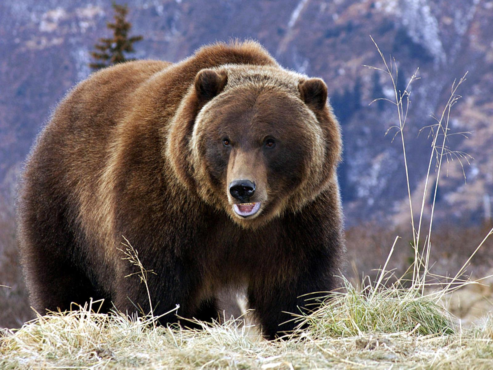

Animales Terrestres Más Fuertes
Aquí conocerás algunos de los animales terrestres más poderosos del planeta.
-
Elefante:
Son los animales terrestres más grandes del mundo, siendo el elefante africano el de mayor tamaño, ya que puede llegar a pesar hasta 7,000-7,500 kg. Las hembras por lo regular son más pequeñas. La trompa del elefante, que contiene 100 mil músculos y tendones, juega un papel muy importante y necesario para su vida. Con ella puede agarrar, respirar, alimentarse, oler, beber agua, levantar objetos, producir sonidos, comunicarse, bañarse, defenderse, protegerse y detectar a otros miembros. De igual manera poseen colmillos muy grandes y fuertes hechos de marfil que pueden pesar hasta 120 kg y tener tres metros de longitud en casos extremos, aunque comúnmente miden menos de un metro. Puede levantar hasta 9,000 kg con su trompa. Se alimentan de hierbas, ramas, cortezas de árboles y arbustos, llegando a consumir al día hasta 200 kg. Pueden beber diariamente 152 litros de agua, y en el caso de un macho adulto de gran tamaño, logra beber en menos de cinco minutos hasta 212 litros de este líquido.


-
Gorila:
Estos enormes primates son los más grandes del mundo en su especie y se encuentran en grave peligro de extinción. Los machos pueden llegar a medir hasta 1.80 metros y pesar más de 200 kilos. Usan los brazos para caminar, pues son más largos que sus piernas, y cuentan con pulgares oponibles en ambas extremidades. Son herbívoros y tienen una esperanza de vida de entre 30 y 50 años. Un gorila adulto puede levantar más de 10 veces su peso corporal. Viven en grupos familiares de entre 5 y 10 individuos normalmente, pero se conocen casos de parejas y de grupos de más de 50, liderados por un macho dominante que mantiene su posición durante años. Los gorilas viven en bosques tropicales y subtropicales en las regiones de África central. Prefieren áreas boscosas y áreas de montaña donde pueden encontrar alimentos con facilidad.

-
Oso Grizzly:
El oso grizzly es uno de los depredadores más fuertes de América del Norte. Puede llegar a pesar entre 300 y 700 kg. Su musculatura y fuerza le permiten cazar presas grandes, como alces y ciervos. Además, es capaz de nadar grandes distancias y trepar árboles. Los osos grizzly también son conocidos por su agresividad cuando se sienten amenazados, lo que los convierte en uno de los animales más temidos de su hábitat. El grizzly es un excelente cazador solitario, pero también se alimenta de frutos, raíces y vegetales. Su fuerza es tal que puede arrancar árboles pequeños con facilidad y defender su territorio de cualquier intruso. Estos imponentes gigantes tienden a ser animales solitarios, con la excepción de las hembras y sus cachorros, pero a veces se congregan. Se pueden ver espectaculares reuniones de osos en los principales lugares de pesca de Alaska cuando los salmones corren río arriba para el desove de verano. En esta temporada, docenas de osos pueden reunirse para darse un festín con los peces, anhelando grasas que los sostendrán durante el largo invierno que se avecina. Los grizzlies cavan madrigueras para la hibernación, a menudo escondiéndose en una ladera de aspecto adecuado. Las hembras dan a luz durante este descanso invernal, a menudo a gemelos. El oso grizzly habita en bosques de coníferas, zonas montañosas, y en áreas cercanas a ríos y lagos en América del Norte, especialmente en Canadá y Alaska.
